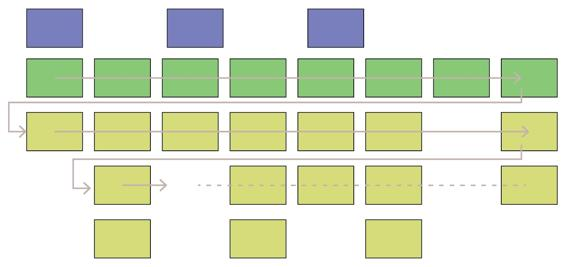

Story mapping
Story Mapping (http://jpattonassociates.com/wp-content/uploads/2015/03/story_mapping.pdf) is a technique I find useful for slicing a product vision into a series of experiments that can be incrementally released to specific groups of users. As the following diagram depicts, it is a visualization technique to help tell a story about how different users (blue cards) do something to reach a specific goal. It is important to have a user focus because we will be using feature flags to enable features for specific user groups. Thus, the user needs to be a fundamental delimiter in the roadmap. User tasks (green and yellow cards) are organized from left to right in the order you would describe the user tasks to someone else. User tasks are organized from top to bottom based on priority.
This is where we create our slices (grey arrows). The smallest number of tasks that enable a specific user type to accomplish a goal is a viable release to perform an experiment.

The first slice should be the walking skeleton (green cards). I mentioned earlier that I would point out analogs to scrum sprints that we can apply to Lean and Kanban. Milestones are one such analog. Obviously, a release (that is, a slice) is a milestone and the walking skeleton should be the first major internal milestone. Completing and validating the walking skeleton across the various user types is a major achievement. The backbone of the system is in production and access is flipped on for internal users to preview the release and provide initial feedback.
This first experiment sets the stage for everything that follows. From here, individual teams can perform experiments independently for different user types. It is interesting to point out that our cloud-native architecture facilitates these independent experiments. For example, a team can build a component in one experiment that sends events downstream to a component that may be built in a later experiment. The current component can still function properly for the experiment without the presence of the other component. When we do implement the other slice, we can replay the previous events from the data lake to seed the new component.